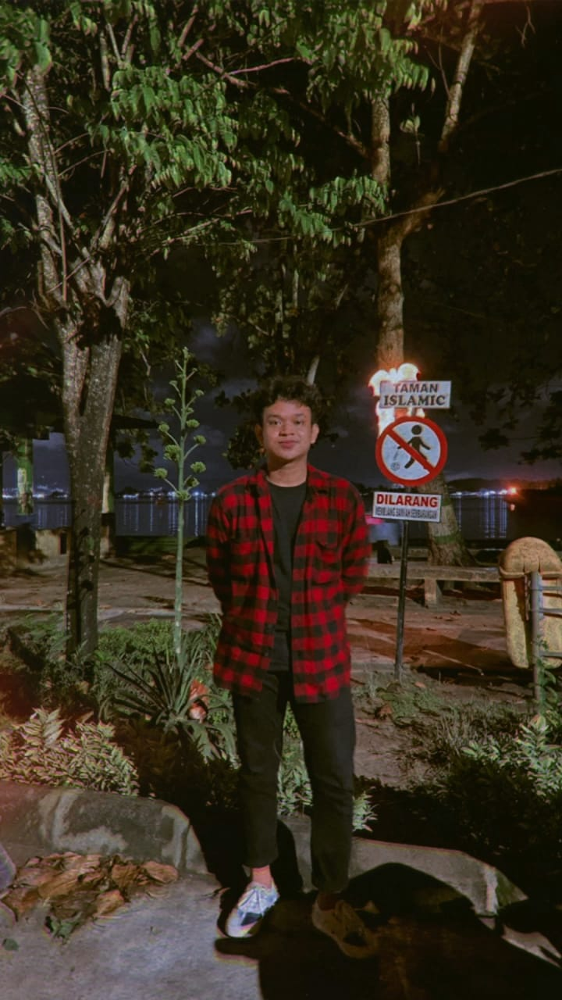

<!DOCTYPE html>
<html lang="en">
<head>
    <meta charset="UTF-8">
    <meta http-equiv="X-UA-Compatible" content="IE=edge">
    <meta name="viewport" content="width=device-width, initial-scale=1.0">
    <title>AboutMe</title>
    <link rel="stylesheet" href="style.css">
    <!-- <link rel="stylesheet" href="biodata.css"> -->
</head>
<body>
    
</body>
</html>
<!-- <header class='masthead'>
    <p class='masthead-intro'>Hi Saya</p>
    <h1 class='masthead-heading'>Yudith!</h1>
  </header> -->
  <div class="fContainer">
    <nav class="wrapper">
        <div class="logo">
            <li></li>
        </div>
        <ul class="navigation">
            <li><a href="index.html" class="home">Home</a></li>
            <li><a href="#keranjang" class="keranjang">Keranjang</a></li>
            <li><a href="#galeri" class="galeri">Galeri</a></li>
            <li><a href="biodata.html" class="akun">Tentang</a></li>
            <li></li>
        </ul>
    </nav>
</div>
  <section class="introduction-section">
    <div>
        
    </div>
      <h1>PERKENALKAN</h1>
      <p>Saya seorang mahasiswa Universitas Mulawarman dan mengambil jurusan Informatika, saya sekarang menginjak semester 3</p>
      <p>Saya suka hal-hal berbau komputer, teknologi, dan internet. Dan saya juga suka cewe</p>
  </section>
  <section class="location-section">
      <h1>Darimana aku berasal?</h1>
      <p>Aku berasal dari Sangatta, Kutai Timur</p>
  </section>
  <section class="questions-section">
      <h1 class="h1">SELENGKAPNYA TENTANG SAYA</h1>
      <h2 href="h2.1" class="h2.1">Apa Hobi Yang Paling Kamu Suka?</h2>
      <p>Hobbi favorit saya adalah semua olahraga dan sedikit ngoding</p>
      <h2>Apa Profesi Impian Mu?</h2>
      <p>Profesi impian saya adalah menjadi seorang Cyber Security dan Abdi Negara</p>
      <h2>Dimana Kamu Tinggal?</h2>
      <p>Saya sekarang tinggal di Samarinda, Kalimantan Timur. Dan sedang menempuh pendidikan kuliah S1 Informatika</p>
      <h2>Kenapa kamu memilih Informatika sebagai jurusan kuliah?</h2>
      <p>Karena saya suka komputer, teknologi, dan internet. Dan saya juga ingin menjadi seorang Cyber Security.</p>
  </section>
  
  <footer class="content-footer">
    <p style="color: white;">Hai Jika kepo bisa lihat Media Sosial Saya</p>
      <ul class="social">
          <li><a class="css-is-deranged" href="https://github.com/yudthadtyaaa">GitHub</a></li>
          <li><a class="css-is-deranged" href="https://www.instagram.com/yudthadtyaa/">Instagram</a></li>
      </ul>

      <footer>
        <div class="wrapper2">
          <small>&copy; 2022 <strong>Website Tiket Konser Tulus</strong>, Praktikum Web Semester 3</small>
          <nav class="footer-nav">
            <a href="#">Back on top</a>
            <!-- <li><a href="biodata.html" class="akun">Tentang</a></li> -->
            </nav>
        </div>
      </footer>
    
  </footer>